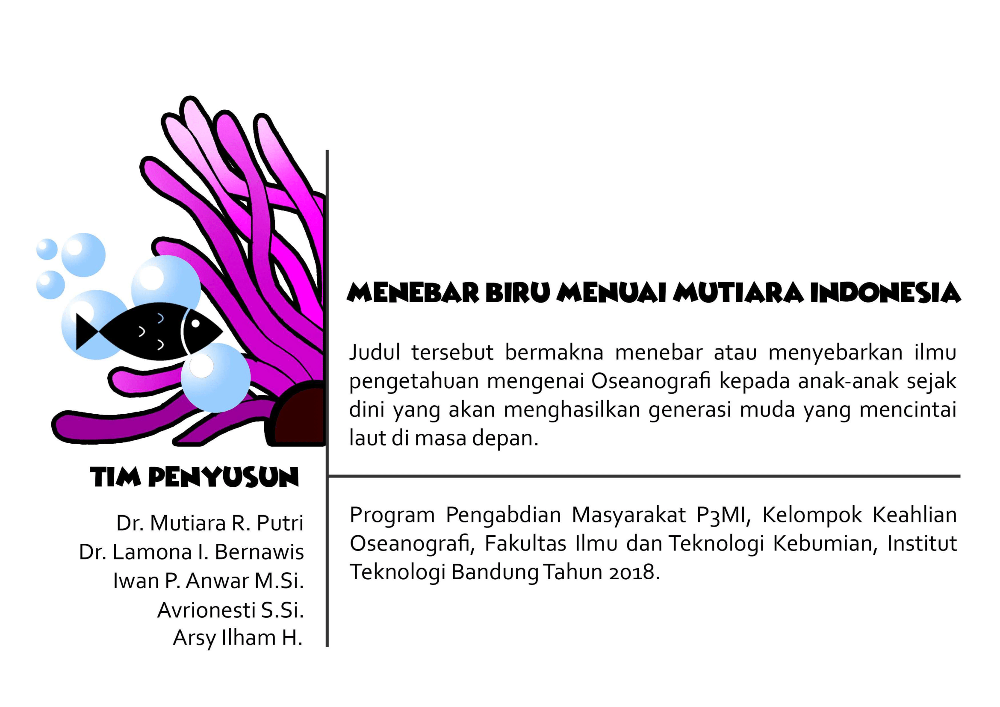

Selamat datang di Halaman Mewarnai - Hewan Laut
Indonesia memiliki ekosistem laut yang sangat beragam dan menakjubkan. Di halaman ini, Anda dapat mempelajari lebih lanjut tentang laut Indonesia dan mewarnai gambar-gambar kehidupan laut yang indah. Selami dunia makhluk laut yang penuh warna dan temukan keajaiban harta karun akuatik Indonesia. Baik Anda seorang anak atau orang dewasa, halaman mewarnai ini menawarkan perjalanan yang menyenangkan ke dalam laut biru yang dalam.
Indonesia, sebuah negara kepulauan yang terdiri dari lebih dari 17.000 pulau, merupakan rumah bagi beberapa lingkungan laut yang paling beragam di dunia. Laut Indonesia penuh dengan kehidupan, menjadi rumah bagi beragam makhluk laut yang memukau, mulai dari plankton terkecil hingga mamalia terbesar. Surga bawah laut ini merupakan bukti kreativitas dan ketangguhan alam, dan sekarang, Anda berkesempatan untuk menjelajahi dan menghargainya melalui kegiatan mewarnai dan belajar.
Halaman mewarnai kami dirancang untuk menjadi edukasi dan hiburan. Saat Anda menghidupkan hewan-hewan laut ini dengan warna, Anda juga akan mendapatkan wawasan tentang habitat, perilaku, dan peran penting yang mereka mainkan dalam ekosistem. Setiap lembar mewarnai disertai dengan fakta dan informasi menarik tentang hewan laut yang digambarkan, menjadikannya aktivitas yang sempurna untuk pikiran yang selalu ingin tahu.
Mari kita mulai dengan tinjauan umum tentang keragaman hewan laut yang luar biasa yang mungkin Anda temui di perairan Indonesia. Keanekaragaman hayati laut Indonesia yang kaya meliputi segala hal, mulai dari barakuda yang besar hingga coelacanth yang sulit dipahami. Makhluk-makhluk ini mendiami berbagai lingkungan, mulai dari terumbu karang dangkal hingga dasar laut yang dalam, masing-masing beradaptasi dengan ceruk unik mereka. Keanekaragaman ini merupakan cerminan dari sifat ekosistem laut yang kompleks dan saling bergantung.

